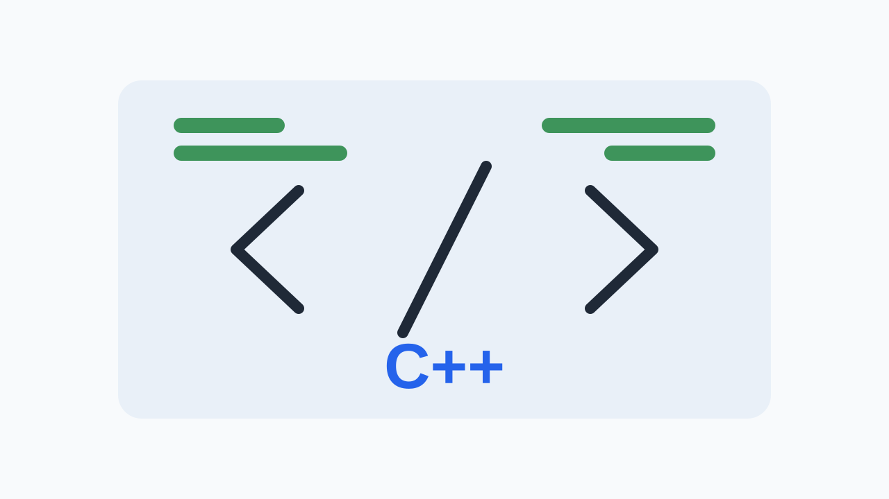

2026 W27
Published W28
This week covers 3 stories, including ‘CameraX 1.7.0-alpha02 released: GPU-based image analysis and night mode indicator APIs introduced’ and ‘libcamera: SensorSequence metadata control patch proposed for sensor frame tracking’.
In this issue
- CameraX 1.7.0-alpha02 released: GPU-based image analysis and night mode indicator APIs introduced
- libcamera: SensorSequence metadata control patch proposed for sensor frame tracking
- Analysis of a patch fixing a media driver buffer overflow in LLVM/Clang build environments
CameraX 1.7.0-alpha02 released: GPU-based image analysis and night mode indicator APIs introduced
AndroidX CameraX 1.7.0-alpha02 Release Notes

The CameraX 1.7.0-alpha02 release, published on July 1, 2026, adds a large set of new APIs, including hardware buffer exposure to support GPU-based image analysis and APIs for detecting night mode status.
1.7.0-alpha02, the latest alpha version of the AndroidX CameraX library, was officially released on July 1, 2026. The most important change in this update is that the ImageAnalysis.OUTPUT_IMAGE_FORMAT_PRIVATE format and ImageProxy.getHardwareBuffer() are exposed as public APIs to support high-performance GPU-based image analysis. This lets app developers access camera frames directly in the GPU pipeline without going through CPU memory copies, maximizing image processing efficiency.
A new night mode indicator API has also been introduced that can analyze lighting and environmental conditions to determine whether the criteria for entering night mode are met. Through the isNightModeIndicatorSupported() and getNightModeIndicator() methods added to the CameraInfo and CameraExtensionsInfo classes, applications can monitor in real time whether the current environment is suitable for night mode and reflect it in the UI.
In addition, built-in gesture support for pinch-to-zoom and tap-to-focus has been added to the CameraXViewfinder component, and screen flash and stream state control features have been reinforced. An isAutoRotationEnabled property, which automatically sets an appropriate rotation value based on device sensor data, has been added to SessionConfig.Builder, improving compatibility across devices of various form factors.
There is no direct HAL change, but because apps perform GPU analysis through PRIVATE streams, buffer allocation and acquisition latency need to be validated. In addition, since the night mode indicator API is tied to the HAL's AE mode and vendor extension metadata state, it should be verified that metadata is delivered accurately.
libcamera: SensorSequence metadata control patch proposed for sensor frame tracking
libcamera Patchwork (patch review)

A libcamera patch v2 proposed on July 3, 2026 discusses adding a SensorSequence metadata control to precisely control and track sensor frame sequences.
A patch v2 adding a 'SensorSequence' metadata control, which allows sensor frame sequences to be precisely tracked and controlled, has been submitted to the mailing list of libcamera, the Linux-based camera framework. The proposal aims to improve frame synchronization between the camera sensor hardware and the image pipeline.
If sensor sequence metadata is introduced, it will become possible to track the exact order and timing in which each frame was output from the sensor. This could be a very useful tool, especially for precisely aligning the frame synchronization state of both sensors in multi-camera systems, or for detecting and debugging subtle frame drops that occur inside the pipeline.
However, this patch is currently under review in the community and has not yet been officially merged into the libcamera mainline source code. Further review and a vendor integration process therefore appear to be needed before it is applied directly to actual commercial devices or the Android Camera HAL stack.
This is a driver-level change that may help improve the precision of frame synchronization and sequence tracking in the lower driver stack. There is no direct Android Camera HAL API change, but the sequence information provided by lower drivers can be used to enhance frame synchronization debugging at the HAL level.
Analysis of a patch fixing a media driver buffer overflow in LLVM/Clang build environments
lore.kernel.org linux-media list

A kernel patch v2 submitted on July 5, 2026 proposes a fix for a buffer overflow and kernel oops in the dw2102 media driver that occurs only when building with the LLVM+Clang compiler.
A patch v2 to fix a buffer overflow vulnerability in the dw2102 media driver has been submitted to the Linux media subsystem mailing list. The bug occurs in the dw2102_load_firmware() function while reading firmware data in 64-byte chunks. Because it unconditionally tries to read a chunk larger than the number of remaining data bytes, it exceeds the memory boundary.
Notably, this bug clearly surfaces and causes a kernel oops only when the kernel is built with the LLVM+Clang compiler toolchain. This shows that, due to differences in compiler optimization or memory layout, latent buffer handling errors that did not show up in existing GCC builds can lead to fatal errors in a Clang environment.
With Android system and vendor kernel build environments having fully transitioned to LLVM/Clang, such toolchain-specific bugs may also occur in camera drivers or firmware loader modules. Lower media driver development teams should therefore re-examine their memory bounds-checking logic and actively use compiler warnings and static analysis tools.
This case shows the driver stability risk that comes with build toolchain changes, and bounds checking in camera driver firmware loaders needs to be strengthened. There is no direct Android Camera HAL impact, but it is an important reference for ensuring the stability of driver modules that use an LLVM/Clang build environment.